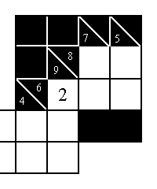
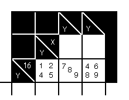
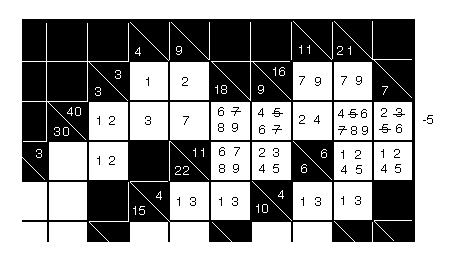

Return to home page.
The follower Kakuro hints may make some of the puzzles a little easier to solve or may let you tackle some harder
ones.
The figure at the right shows how to find a required digit with no trial and error. The 5
squares in the upper right must total 8 + 6 = 14. The 4 blank squares there must total 7 + 5 = 12. The 2 in the
left-hand square was found as 14 - 12 = 2. Simple, but it wasn't obvious to me until my daughter pointed it out. I
think of this as a "dangling digit." In other similar cases, we can only find the sum of the digits in two, or
three, or four squares. That isn't as nice, but it still helps.
It helps to be able to recognize the minimum total possible with a given number of squares, or a total of one
greater than the minimum. These have a unique combination of digits. For example, a total of 10 in four squares can
only include the digits 1, 2, 3, and 4. A total of 11 in four squares can only include the digits 1, 2, 3, and 5.
Similar unique combinations occur with maximum totals and one less than maximums. It's the totals in between that
make the puzzles difficult enough to be interesting, and sometimes hard enough that they aren't even interesting to
me.
One of my sons pointed out that essentially the same things apply when there are, say, five blank squares and the
total is 35. Since the maximum total possible is 45, with nine squares, we know that the four missing squares must
total 45 - 35 = 10. But, the only way for that to happen is to be missing the digits 1, 2, 3, and 4.
I like to write the digits 1 thru 9 on the puzzle page somewhere to make it easier to visualize.
This
figure shows a case of when we can eliminate a digit by considering the allowable maximum and minimum. To evaluate
the right-hand square, we note that the minimum sum of the other two squares is 1 + 7 = 8; the total for the three
squares is 16, so the maximum digit in the right-hand square is 16 - 8 = 8; so, we can get rid of the 9. We also
note that the maximum sum of the other two squares is 5 + 9 = 14; the total for the three squares is 16, so the
minimum digit in the right-hand square is 16 - 14 = 2; so, we can't get rid of the 4.
 This
figure shows a case of when we can eliminate a digit by considering whether each digit in a square is allowable. We
continue the previous example by showing the 9 crossed out. To evaluate the left-hand square, we consider first
whether the 1 is possible: the total of the other two squares would have to be 15, which we could get either as 7 +
8 or as 9 + 6. So, the 1 is possible. For the 2 to be possible, we'd need to have 14 in the other two, which we
could get as 8 + 6. So, the 2 is also possible. For the 4 to be possible, we'd need to have 12 in the other two, but
we can only get a total of 12 as 8 + 4, and we are already assuming a 4 in the left-hand square. Since we can't
duplicate digits, the 4 is not possible. You can easily see that the 5 is possible.
This
figure shows a case of when we can eliminate a digit by considering whether each digit in a square is allowable. We
continue the previous example by showing the 9 crossed out. To evaluate the left-hand square, we consider first
whether the 1 is possible: the total of the other two squares would have to be 15, which we could get either as 7 +
8 or as 9 + 6. So, the 1 is possible. For the 2 to be possible, we'd need to have 14 in the other two, which we
could get as 8 + 6. So, the 2 is also possible. For the 4 to be possible, we'd need to have 12 in the other two, but
we can only get a total of 12 as 8 + 4, and we are already assuming a 4 in the left-hand square. Since we can't
duplicate digits, the 4 is not possible. You can easily see that the 5 is possible.
Our last example is taken from puzzle 92 of the Dell® Kakuro Cross Sums Collection, Volume
1. We first note that the intersection of the block with the total of 3 and that with the total of 4 has to be a 1,
since the 1 is required in both blocks. When we put the 1 in, as shown, we also get the 2, 3, and 7 in that area. We
put the digits 1 and 3 in the other two blocks with totals of 4. In the block of three squares totaling 18, the
total of the two upper blocks has to be either 15 or 17, so the digits 6, 7, 8, and 9 would cover all possibilities.
We can cross out the upper 7, since we already have one in that row. We fill in the four possible digits in the
horizontal block totaling 11 and the four digits above it in the vertical block totaling 9. We again cross out the 7
there because we already have one in that row. We put a -5 to the right of the block of eight squares totaling 40 to
remind us that the block can't have a 5 since the 5 has to be missing to get us down from 45 to 40. So, we also
cross out the 5's in that row. In the horizontal 16
block, we put in a 7 and a 9 in each square, which gives
us the 2 and the 4 below. In the horizontal 6
block of two squares, we put in 1, 2, 4, and 5 as the only
possibilities, giving 2, 3, 5, and 6 above that right-hand square. We cross out the 3 and 5. To fill in the last
remaining square in this example, the second square from the top of vertical 21
block, we note that the sum
of the other three squares in this block have a maximum of 9 + 5 + 3 = 17, so we need a minimum of 4 in that last
square. We put in 4, 5, 6, 7, 8, and 9 and then cross out the 5 and 7. The point I want to make here is that one of
the squares in the 40
block now has a 4 and a 6, one has a 2 and a 4, and one has a 2 and a 6. This means
that the 2, 4, and 6 are required in these three squares and can be crossed out anywhere else in that block,
eliminating four digits there. I have made up a PDF
cheat sheet
of the 74 intersections I know of that determine the digit that must go in the common square.
Return to home page.